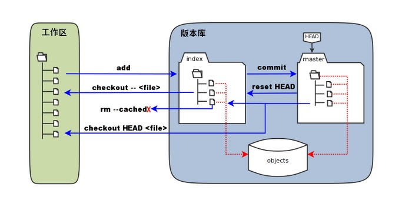

Git工作流程
1.克隆 Git 资源作为工作目录。
2.在克隆的资源上添加或修改文件。
3.如果其他人修改了，你可以更新资源。
4.在提交前查看修改。
5.提交修改。
6.在修改完成后，如果发现错误，可以撤回提交并再次修改并提交。

Git基本概念
1.工作区：就是你在电脑里能看到的目录。
2.暂存区：英文叫stage或index。一般存放在“.git”目录下的“index”文件中，所以我们把暂存区有时也叫作索引(index)。
3.版本库：工作区有一个隐藏目录“.git”，这个不算工作区，而是Git的版本库。

图中的指令： (1)git add:当对工作区修改（或新增）的文件执行“git add”命令时，暂存区的目录树被更新，同时工作区修改（或新增）的文件内容被写入到对象库中的一个新的对象中，而该对象的ID被记录在暂存区的文件索引中。
(2)git commit:当执行提交操作“git commit”时，暂存区的目录树写到版本库（对象库）中，master 分支会做相应的更新。即 master 指向的目录树就是提交时暂存区的目录树。
(3)git reset HEAD:当执行 git reset HEAD 命令时，暂存区的目录树会被重写，被 master 分支指向的目录树所替换，但是工作区不受影响。
(4)git rm –cached
(5)git checkout:当执行 git checkout . 或者 git checkout –
Git创建仓库
(1)git init:使用 git init 命令来初始化一个 Git 仓库，Git 的很多命令都需要在 Git 的仓库中运行，所以 git init 是使用 Git 的第一个命令。在执行完成 git init 命令后，Git 仓库会生成一个 .git 目录，该目录包含了资源的所有元数据，其他的项目目录保持不变。
(2)git clone:使用 git clone 从现有 Git 仓库中拷贝项目。
git clone <"repository name">(3)git config:git 的设置使用 git config 命令。
Git基本操作
 常用指令：git clone, git push, git add, git commit, git checkout, git pull.
常用指令：git clone, git push, git add, git commit, git checkout, git pull.
提交与修改操作
(1)git add: 添加文件到仓库或版本库。
(2)git status: 查看仓库当前状态，显示有变更的文件。
(3)git diff: 比较文件的不同，即暂存区和工作区的差异。
(4)git commit: 提交暂存区到本地仓库。
(5)git reset: 回退版本。
(6)git rm: 删除工作区文件。
(7)git mv: 移动或重命名工作区文件。
(8)git log: 查看历史提交记录。
(9)git blame
远程操作
(1)git remote: 远程仓库操作。
(2)git fetch: 从远程获取代码库。
(3)git pull: 下载远程代码并合并。
(4)git push: 上传远程代码并合并。
我的常用操作
git remote add origin https://github.com//<仓库名称>
添加远程仓库origin。
git add .
将工作区所有文件添加到版本库。
git commit -m “remark”
提交暂存区到本地仓库。
git remote -v
显示所有远程仓库及其链接。
git push origin master
将文件推送到远程仓库origin的master分支。
git push -u origin master
加了参数-u后，以后即可直接用git push 代替git push origin master。
git push origin –delete master
删除远程仓库origin的master分支。